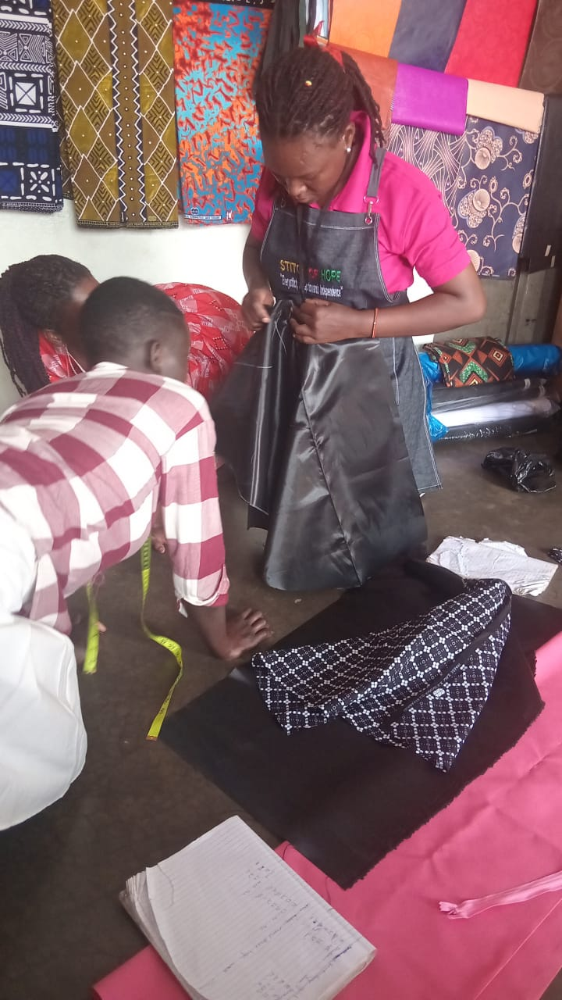

Foundation Tailoring
3–6 months
Machine handling, basic stitches, measurements and simple garments including skirts, children's wear and school uniforms.

PROGRAMS & SERVICES
Explore our progressive tailoring, garment construction, fashion design and enterprise training programmes.
PROGRAMS & SERVICES
Progressive training allows beneficiaries to enter at a level matching their previous exposure and leave with a production-ready skill set.
3–6 months
Machine handling, basic stitches, measurements and simple garments including skirts, children's wear and school uniforms.
3–6 months
Men's and women's wear, alterations, finishing techniques and pattern reading.
6 months
Design sketching, fabric selection, contemporary and cultural fashion styles.
6 months
Costing, pricing, bulk orders, branding, customer service and portfolio building.
TRAINING IN ACTION





SUPPORT BEYOND TRAINING
Literacy, numeracy, counseling, psychosocial support and sexual and reproductive health education.
Budgeting, savings, record-keeping, pricing and formation of Village Savings and Loans Associations.
Ramps, accessible latrines, adapted sewing workstations and disability-aware support.
An on-site childcare corner during training hours supports teenage mothers with infants.